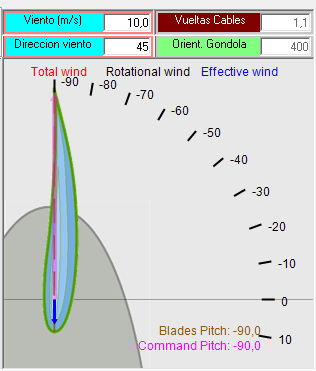
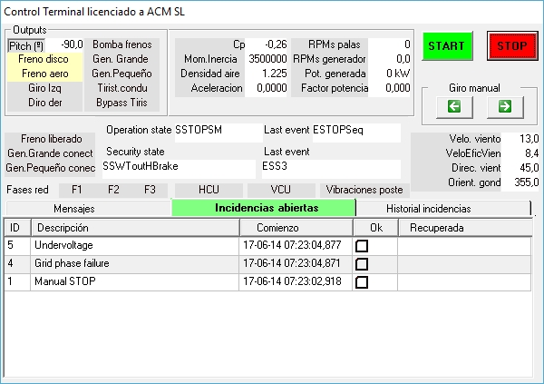

Ziel:Erkennen Sie die Windgeschwindigkeitsbedingungen, die die Erzeugung ermöglichen.
Was zu beachten ist:Windgeschwindigkeit, Systemstatus und Übergang von Abschaltung zu Betrieb.
Was ist zu beachten:Ungefähre Windgeschwindigkeit zum Zeitpunkt der Inbetriebnahme und anschließende Entwicklung.
RECHT Beachten Sie, ob es Hysterese zwischen Abschaltung und Inbetriebnahme gibt.
Ziel dieser Praxis ist es, den Schüler vertraut zu machen
•mit den verschiedenen Synoptiken verfügbar.
• mit der Schaffung der notwendigen Bedingungen für die Windenergieanlage, die Produktion zu beginnen.
1. Stellen Sie sicher, dass die Simulation läuft: im "Laufsimulator..." synoptisch, drücken "Laufen."
2. Beachten Sie, dass sich der Steigungswinkel auf -90o ändert. Das können Sie im Power Train-Synoptisch überprüfen.

Auch im "WindNacelle"-Syndrom:


3. Überprüfen Sie im "Electrical Cabinet..." synoptic, dass die "Hauptschalter" ist verbunden. Siehe folgende Abbildung:


Abb. Detail der "Hauptschalter."
4. Überprüfen Sie auf dem Bildschirm "Control Terminal", dass es keine Vorfälle gibt, die im "Offene Vorfälle" Tab (außer "Handbuch STOP").
Wenn Sie zum Beispiel die Simulation "laufen" haben und der "Main Switch" nicht angeschlossen war, wird der Controller das Fehlen von Hauptstromversorgung und Bericht Vorfälle wie die in der folgenden Abbildung gezeigt erkennen, wobei das Datum, an dem sie erkannt wurden (Jahr-Monat-Tagestunde:Minute:zweite, Millisekunde):



5. In dieser Situation sollte die Liste in "Open Incidents" nur "Manual STOP" zeigen, wie in der folgenden Abbildung:
Der Controller ist in der Lage, den Befehl "START" zu empfangen.Bei dieser besonderen Art des Controllers, muss dem (manuellen) Befehl des Control Terminals die "Zulassung" des Bedieners vorausgehen, für die das Feld entsprechend der "Manual STOP" Linie in der obigen Liste überprüft werden muss. Siehe folgende Abbildung.
Beachten Sie, dass sich die "Wissenschaft" dieses Vorfalls nicht in der "Zwischengeschichte" widerspiegelt.
Von diesem Moment an steht der Controller zur Verfügung, um den "manuellen" "START" Befehl zu erhalten.
Wenn Sie die Taste "START" drücken, hängt die Leistung der Windenergieanlage von der Windgeschwindigkeit ab. Vor dem Pressen:
6. Stellen Sie sicher, dass Sie einen "Recorder" sichtbar haben, wo das "Vordefinierte Panel" mit dem Namen "Cutin + Cutout + Production" angezeigt wird, wie in der folgenden Abbildung gezeigt. Vgl.Wie Sie einen Recorder anzeigen und ein vordefiniertes Panel auswählen.
7. Windgeschwindigkeit auf 6,0 m/s ändern. Dies ist ein niedriger Windwert: Die simulierte Windenergieanlage erzeugt bei einer Nennwindgeschwindigkeit von etwa 12 m/s eine Nennleistung von 1.300 KW. Eine Windgeschwindigkeit von 6 m/s liegt unterhalb der Windgeschwindigkeit "Max for Large Generator" (siehe Funktionelle Windwerte), so wissen wir, dass die 6-polige Verbindung des Generators (Small Generator) verwendet wird.
Um dies zu tun, finden Sie die "SynopticWindNacelle" synoptic (sieheWie man eine bestimmte Synoptik auf den Vordergrund bringt).
Legen Sie in diesem synoptisch die Maus über die Windanzeige (weißer Hintergrund). Siehe folgende Abbildung.
Sie können den Wind auf zwei Arten ändern:
1. Mit der Eingabe den Sollwert direkt.
Beachten Sie, dass, wenn Sie den Wert ändern, der Hintergrund gelb wird, bis Sie die Taste "Eingeben" auf der Tastatur drücken. Wenn Sie die Änderung abbrechen möchten, bevor Sie "Enter" drücken, können Sie die Taste "ESC" drücken (oben links der Tastatur).
2. Verwendung von "Seite nach oben," "Seite nach unten," "Nach oben Pfeil," und "Auf der Suche" Schlüssel.
Diese Methode ist bevorzugt und ermöglicht es Ihnen, den Wert in Schritten von 1 m/s (Page Up/Page Down) oder in Schritten von 0,1 m/s (Arrows) zu ändern.
Dies ist die bevorzugte Methode weil sie die Windgeschwindigkeitsänderung auf vernünftige Werte begrenzt, während bei Verfahren 1 diese Änderungen sehr abrupt sein können.
8.Sie können dies nutzen, um die Windrichtung zu ändern, mit dem gleichen Verfahren auf dem "Windrichtung" Indikator.
9.Drücken Sie die Taste "START" und beobachten Sie die Entwicklung der folgenden Signale auf dem Recorder und auf der verschiedenen Synoptik.
1.Klingendrehzahl:in SynopticDriveTrain, Control Terminal und Recorder.
2. Drehzahl der Generatorwelle: in Control Terminal und Recorder.
3. Nacelle Orientierung: in SynopticWindNacelle und Recorder.
4. Hydraulikkreisdruck, PumpeBetrieb undBremsanlage: in SynopticDriveTrain und Recorder
5. HexeWinkel: in SynopticDriveTrain (beide in 'Internal view' und '3D view'), im Control Terminal, in SynopticWindNacelle und im Logger.
6. Windgeschwindigkeit: in SynopticWindNacelle, in Control Terminal und Recorder.
7. Thyristor Bypass-KontaktStatus (Verbindung zum Netz): in Elektrokabinett (Innenansicht), in Control Terminal und Logger.
10.Sie erhalten eine Signalentwicklung im Recorder ähnlich wie in der folgenden Abbildung:
11.Man erkennt, dass der Controller nach einer gewissen Zeit (ein paar Sekunden) nach dem Drücken von START die Orientierungsmotoren aktiviert ("Links" und "Rechtsdrehen") bis die Orientierung der Nacelle "zufällig" der angezeigten Windrichtung entspricht, nicht aber genau. Dies liegt daran, dass die Steuerung annimmt, dass bei der Messung der Windrichtung eine gewisse Unsicherheit vorliegt und dass andererseits die Gondel 'erfordert' Energie bewegt und daher einen Kostenaufwand aufweist. Das Ergebnis ist, dass, wenn der Fehler zwischen der gemessenen Windrichtung und der Orientierung der Gondel innerhalb eines bestimmten Randes liegt, es "entscheidet", dass sie orientiert ist.
Der Wert dieser Marge im Simulator ist für Bildungszwecke übertrieben.
Ebenso ist die Drehzahl der Gondel im Simulator nicht realistisch, obwohl dies ein Wert ist, der auch bei der Ausführung der Simulation mit den Parametern verändert werden kann.NacelleYawing.CWYawingSpeedundNacelleYawing.CCWYawingSpeed. Der Standardwert beträgt 10 Grad/Sekunde, während in der Realität dieser Wert etwa 0,5 Grad/Sekunde beträgt.
12.Das Konzept von "Effektive Windgeschwindigkeit."
Dieser Wert entspricht dem Wert dieWind, der zur Rotationsebene der Schaufeln frontal ist, d.h. der Wind, der effektiv zur Drehung der Schaufeln dient.
Wenn die Windenergieanlage nicht orientiert ist, entspricht dieser Wert dem Produkt der tatsächlichen Windgeschwindigkeit multipliziert mit dem Cosinus des Ausrichtwinkels. Es entspricht dem roten Vektor in der folgenden Figur.
Dieser Effektivwert ist in der "VORSITZ" Anzeige auf der "Terminal Control" synoptisch. Wenn die Gondel orientiert ist, fällt dieser Wert mit dem Windgeschwindigkeitswert zusammen. Dies kann durch die Entwicklung der beiden Werte in der Recorderfigur, im letzten Kanal, überprüft werden, wo sie auf den gleichen Wert konvergieren, wenn die Gondel orientiert ist.
13. Funktionsanalyse des Ablaufs während des Netzanschlussvorgangs(cutin):
1. Wenn die Gondel nicht auf den Wind ausgerichtet ist, beginnt die Orientierung. Es kann erforderlich sein, zunächst einen Abwickelvorgang des Stromkabels durchzuführen.
2.Basierend auf der Windmessung, der SteuerungEntscheidungendaß der Generator, der zwei mögliche Anschlüsse aufweist (entsprechend Statorwicklungen mit 4 oder 6 Magnetpolen, "Großer Gen." und "Kleine Gen." bzw." wird mit 6 Polen ("Kleine Gen") verbunden. In diesem FallSynchrondrehzahl1000 U/min beträgt.
3. Vor Beginn des eigentlichen Betriebs entscheidet der Regler, den Zustand des Bremsmechanismus (Bedingung des Bremsbackens, Feder usw.) zu überprüfen. Zu diesem Zweck aktiviert sie die Bremse, während die Steigung der Schaufeln auf einen Wert eingestellt wird, bei dem sie weiß, dass der Wind für diese Überprüfung ein ausreichendes mechanisches Drehmoment an den Schaufeln erzeugt.
4. Wenn alles in Ordnung ist, wird die Bremse losgelassen: es schließt das hydraulische Schaltventil und startet die Pumpe.
5. Der Triebzug beginnt zu beschleunigen.
6. Der Regler überwacht den Beschleunigungswert des Antriebsstrangs und wirkt auf die Steigung (die die Beschleunigungsquelle ist), so dass dieser Wert unter einem bestimmten Niveau bleibt.
7. Bei Annäherung der Generatordrehzahl an die Synchrondrehzahl aktiviert der Regler die Thyristoren. Der Thyristor-Leitwinkel folgt einem Muster des Startens mit einem kleinen Leitungswinkel und Erreichen der vollen Leitung nach wenigen Sekunden (typischerweise 2 bis 4 Sekunden).
Sehen Sie die Animation inWeicher Starter (weiche Verbindung) zum Netz.
8. Wenn die Thyristoren voll leitend sind, aktiviert der Controller die Thyristor-Bypass-Kontaktoren, die sie kurzschließen: in dieser Situation fließt kein Strom durch die Thyristoren und werden deaktiviert. Die Windenergieanlage ist in der Produktion.